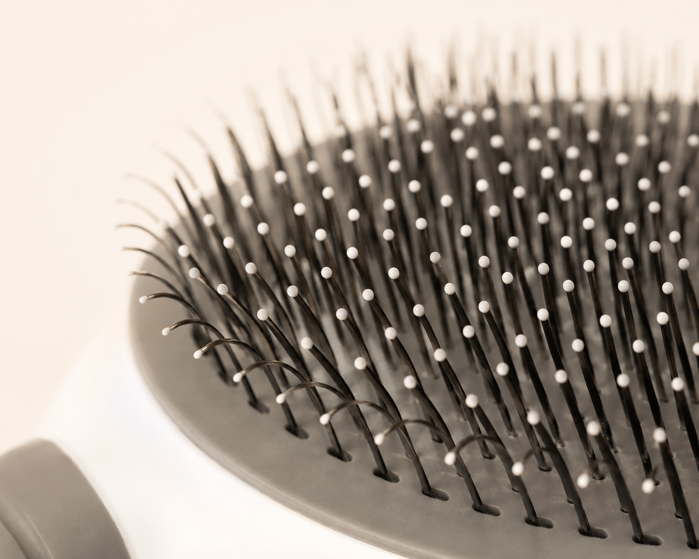
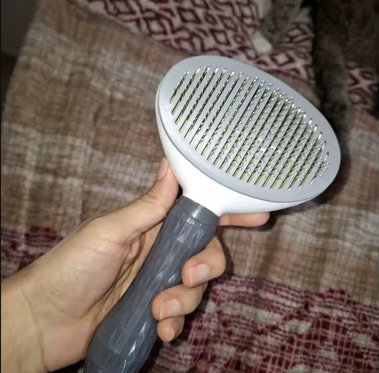
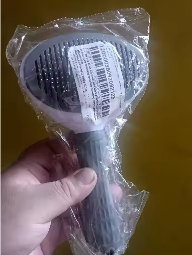
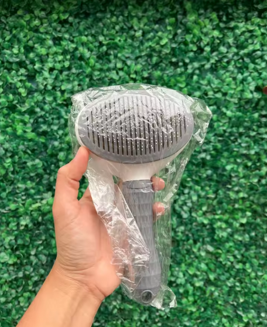
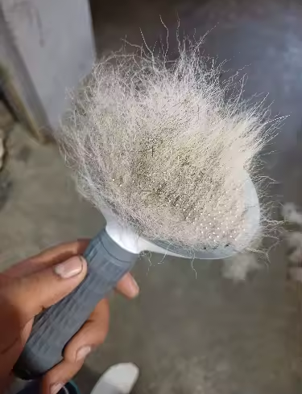
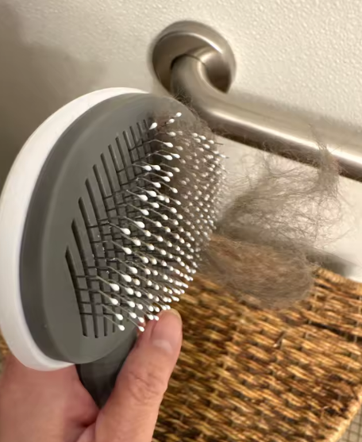

Rolo adesivo
Não dura nada, para de grudar depois de duas passadas, é gasto novo todo mês e os pelos continuam lá.
Escova Autolimpante Pelaria
A casa cheia de pelos já virou rotina: você limpa hoje sabendo que amanhã tem de novo.
A Escova Autolimpante Pelaria atinge a camada mais profunda da pelagem e remove o pelo morto antes dele cair e sujar sua casa, além de se limpar sozinha com um clique.
Produto avaliado 4.8 por mais de 5.000 compradores · Frete grátis · Garantia de 7 dias
O pelo já virou parte do seu dia. Na roupa escura na hora de sair, no sofá que você ajeita antes da visita chegar, nos minutos de aspirador que você sabe que amanhã não vão ter valido de nada. Seja você correndo pro trabalho ou em casa o dia todo com ele do seu lado, é a mesma luta.
Não é falta de esforço. É que o alvo está errado. Enquanto o pelo morto continua preso no corpo do seu pet, ele vai cair todo santo dia, não importa quantas vezes você limpe.
Não dura nada, para de grudar depois de duas passadas, é gasto novo todo mês e os pelos continuam lá.
Barulhento, pesado e assusta o seu pet. Fora que os pelos mortos continuam presos na pelagem, prontos pra cair mais. Perda de tempo completa.
Entope de pelo super rápido, e só te resta tirar tudo na unha. Fora que as cerdas de metal pontudas machucam o seu bichinho.
Todas falham por diversas razões: cuidam do pelo já caído, não previnem nada, são chatíssimas de limpar e ainda podem machucar seu bichinho.
Tecnologia Click-Clean
A Escova Autolimpante Pelaria tem a tecnologia Click-Clean: uma placa interna que, ao apertar o botão, avança além das cerdas e empurra toda a manta de pelo pra fora. O pelo morto sai compacto, direto pro lixo. Para que você não precise enfiar a unha para remover os excessos, evitando sujeira e deformação da escova. Tudo isso sem machucar os pestinhas.
As cerdas anguladas em 60° alcançam o pelo morto na camada de baixo, tirando justamente o pelo que ia parar na sua casa. E como cada cerda tem ponta esférica de resina, o seu pet sente massagem, não arranhão.
Quem escova o pet com frequência vive com medo de machucar. Por isso cada cerda da nossa escova termina numa ponta arredondada de resina, que desliza sobre a pele sem arranhar. Massageia, ativa a circulação e relaxa o animal.
A maioria dos pets odeia escova porque as comuns puxam e arranham. Com as pontas redondas e a pressão distribuída, em poucos dias o seu pet vem correndo quando vê a escova na sua mão.

Desde o pelo curto e espetado do Pug, do Buldogue e do gatinho comum, até o pelo longo e denso do Golden, do Spitz e do Persa, o pelo morto é um problema que não pergunta raça, faz parte deles. A pergunta é se você quer esse pelo todo na SUA casa.
| Comparativo | Escova Pelaria | Escova comum | Rolo adesivo |
|---|---|---|---|
| Limpa sozinha com um clique | Sim | Não | Não |
| Não arranha a pele (ponta de resina) | Sim | Não | Não se aplica |
| Dura anos | Sim | Enferruja | Acaba em semanas |
| Custo ao longo de 1 ano | Compra única | Baixo | Acumula muito |
| Remove o pelo na fonte | Sim | Não | Não |
Comparativo entre categorias de produto, não entre marcas específicas.
Menos de 200 unidades em estoque para este lote
QUERO A MINHA ESCOVAPague com Pix ou cartão · Compra protegida · Garantia de 7 dias

Chegou dentro do prazo estimado de entrega, é exatamente como mostrado nas imagens de referência, não pesa nada e é fácil de usar, limpa com facilidade, não prejudica os animais de estimação, pois as pontas do arranhador são cobertas com plástico. Meu gato gostou, recomendo.
Avaliação verificada do produto

excelente para cães com muito pelo e os pelos da escova são removidos apenas ao pressionar o botão altamente recomendado
Avaliação verificada do produto

É um bom tamanho, é a segunda vez que o encomando, é super prático e se funcionar, uso com o meu Pug.
Avaliação verificada do produto

Super excelente! Funciona muito, muito bem. Tenho uma Husky e ela tira todo o pelo morto acumulado. Além disso, minha cachorra adora, então realmente não machuca!
Avaliação verificada do produto

Muito satisfeito com a compra. A escova funciona como o esperado, mas tem que tomar cuidado na hora de tirar os pelos. Não recomendo usar direto sem limpar com frequência, senão corre o risco de quebrar.
Avaliação verificada do produto
Recebeu, testou e não amou? Você tem 7 dias pra solicitar a devolução. A Pelaria paga o frete de volta e devolve 100% do seu dinheiro assim que o produto chega aqui. O risco é todo nosso, não seu.
QUERO A MINHA ESCOVANão. Cada ponta tem esfera de resina que massageia em vez de arranhar.
Sim, é justamente o pelo curto e espetado que mais gruda e que a escova tira na fonte.
7 dias pra devolver, frete de volta por nossa conta, reembolso integral.
Entrega padrão de 10 a 17 dias úteis, com rastreio. Entrega expressa de 10 a 12 dias úteis. Você acompanha tudo pelo código de rastreio.
Pagamento protegido, Pix ou cartão via Mercado Pago, e garantia de 7 dias.